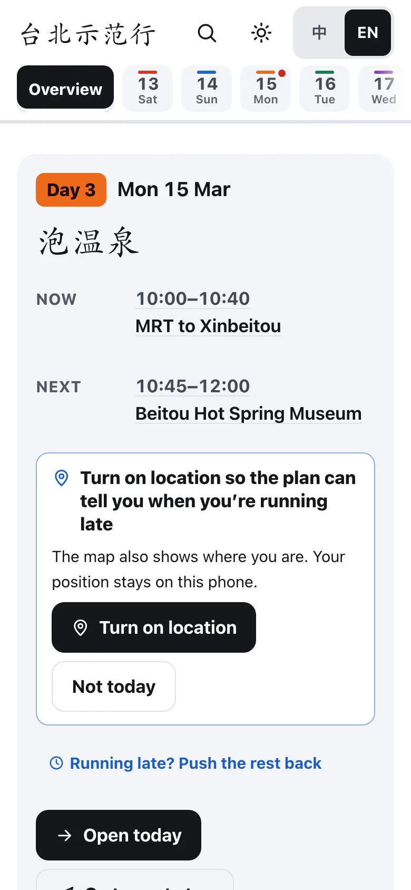
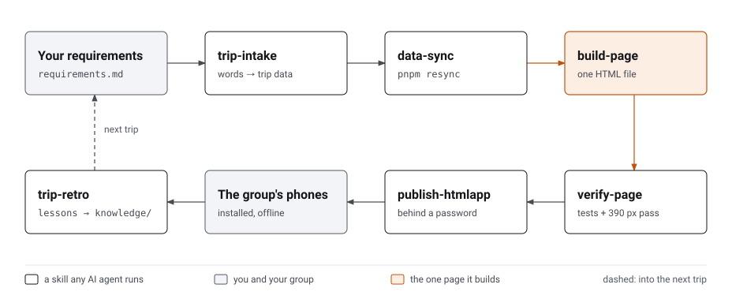

Relax, it’s all on this page. Day 3 is the hot springs; lunch is near the museum.
Ana
0Free
To: everyone in the group chat
Taipei demo trip, Day 3

Postcards from the trip
Each card replays the demo trip: a made-up group of five, one week in Taipei. Or open the demo trip itself, mid-morning
on Day 3.
10:2010:45
台北示范行中
Overview13Sat14Sun15Mon16Tue
Day 3Mon 15 Mar
泡温泉
NOWNEXT
10:00–10:40MRT to Xinbeitou
10:45–12:00Beitou Hot Spring Museum
12:00–13:30Lunch
Running late? Push the rest back
Open today
Sections
Now10:45–12:00 · Beitou Hot Spring Museum
Next12:00–13:30 · Lunch
Food nearby
Toilets nearby
Each day
Day 3
下一站
What’s next? It’s already on the screen.
Open the link and the page already knows the day and the hour at your destination. Now and next sit right at the top.
14:20
台北示范行中
14Sun15Mon16Tue17Wed18Thu19Fri
Day 5 · Wed 17 MarMaokong Gondola → concert
Running late? Push the rest back
Pushed back +30 min from Rest at the hotel until the fixed 19:10 Meet at the Concert Hall door.
14:30– 17:3015:00– 18:00
Rest at the hotel
Rest before the evening out
18:0018:30
Dinner near the Concert Hall
Eat early
19:10
Meet at the Concert Hall door定Fixed time
No entry once it starts
19:30– 21:00
Concert定Fixed time
Tickets bought (demo)
Day 5: push back
From which stop? Fixed times (flights, bookings, checkout) never move; the push stops at the next fixed one.
14:30–17:30Rest at the hotel
18:00Dinner near the Concert Hall
How long
15 min30 min45 min60 min
Push back
Pushed back 30 min
定
Booked times stay put.
Flights, tickets and tables carry a red seal. Running late? Push the rest of the day back: the flexible stops move, the sealed ones
stay.
15:25
台北示范行中
Overview13Sat14Sun15Mon16Tue
Day 3Mon 15 Mar
泡温泉
NOW
15:00–17:00Hot spring soak (public pool or private room)
NEXT
18:00Back to town for dinner
NEXT
15:35–17:35Hot spring soak (public pool or private room)
Today’s rest pushed back +35 minAdjustUndo
Running about 35 min behind
From you to Hot spring soak (public pool or private room) is ~9 min: ~15:34 instead of 15:00.
Push the rest back 35 minNo thanks
Open today
Pushed back 35 min
Day 3
慢慢来
Stayed longer? The page notices.
With location on, the page checks where you are against the plan, on the destination’s clock. Fall 15 minutes behind and it offers to
push the rest of the day back by that much. Nothing moves until someone taps, and your location stays on the phone.
About to miss a fixed time, like a show? It says hurry instead, and suggests a taxi now.
08:40
ht-ml.app
台北示范行Install中
Overview13Sat14Sun15Mon16Tue
Day 3Mon 15 Mar
泡温泉
NOW
08:30–09:30Breakfast at the hotel
NEXT
10:00–10:40MRT to Xinbeitou
Add to the home screen
Tap Safari’s Share button (a box with an arrow; at the bottom, or inside the “⋯” by the address bar)
Scroll down and pick Add to Home Screen
Tap Add (top right)
Then open it from the 台北示范行 icon: full screen, like an app.
08:41
台北示范行
Search
像 App 一样
On the home screen, like an app.
Tap Install and the trip gets its own icon. It opens full screen, with no browser bars. On Android, Chrome asks with its own prompt;
on an iPhone, the page shows the three taps in Safari.
It needs a signal to open; once it’s open, it keeps working without one.
12:40
台北示范行中
15Mon16Tue17Wed18Thu19FriMap
Day 6 · Thu 18 MarDihua Street → free shopping
13:00– 17:00
Free shopping in groups
Split up, keep in touch
15:00
Demo Soup Dumplings Added by Ana
Wishlist
17:40– 18:55
Dinner near the hotel
Then collect the bags
Add a stop to Day 6
Add a stop to Day 6 (Thu 18 Mar)
dumpl
2 places
Demo Ba-wanFood · from the stop beforeAdd to plan
Demo Soup DumplingsWishlist · from the stop beforeAdd to plan
Ana adds a stop
12:40
台北示范行中
15Mon16Tue17Wed18Thu19FriMap
Day 6 · Thu 18 MarDihua Street → free shopping
13:00– 17:00
Free shopping in groups
Split up, keep in touch
15:00
Demo Soup Dumplings Added by Ana
Wishlist
17:40– 18:55
Dinner near the hotel
Then collect the bags
Add a stop to Day 6
Every other phone gets it
Airmail
一起改
Add it on one phone. Every phone has it.
Add a stop, push the day back or tick a shared list, and every phone sees it, with who added what. It runs on your own free Firebase,
encrypted on each phone.
Remove “Demo Soup Dumplings” from the plan? It goes from everyone’s page.
CancelOK
Removed Demo Soup DumplingsUndo
Put back Demo Soup Dumplings
Removed by mistake? Undo
14:55
台北示范行中
15Mon16Tue17Wed18Thu19FriMap
Day 6 · Thu 18 MarDihua Street → free shopping
13:00– 17:00
Free shopping in groups
Split up, keep in touch
15:00
Demo Soup Dumplings Added by Ana
Datong, Taipei (demo)
Group sync
Synced just now
The group
You (Ana)1 added stop2 added stopsRemove my 1Remove my 2
LeePlanner2 added stops
Recently removed
Demo Ba-wan · Day 6 16:00removed by you · 2 h agoPut back
Put back Demo Ba-wan
Hours later? Put it back
Day 6
放心
Tapped Remove by mistake? Put it back.
Every removal offers Undo. With group sync on, each phone changes only its own stops, a list keeps recent removals to put back, and a
planner can take everyone back to the original plan.
09:05
台北示范行中
19FriMapAirportEntryOptional
MRT + a car for bagsRecommended
NT$1,100–1,300about NT$220–260 each≈ RM 140–170
Door to door~60 minChangesTaxi from A1With bagsBags go by car
Everyone on the Airport MRTCheapest
NT$800NT$160 each≈ RM 100
Door to door~50 minChangesWalk from A1With bagsBring your own
Pre-booked airport vanLeast effort
NT$1,400–2,000about NT$280–400 each
算清楚
Every cost, per person.
The plan says what the group pays. The page adds each person’s share and the amount in your home currency, at a rate you can change.
14:05
台北示范行中
14Sun15Mon16Tue17Wed18Thu19Fri
Day 5 · Wed 17 MarMaokong Gondola → concert
11:00– 14:00
Maokong Gondola + tea Now
Gondola ~30 min; tea and lunch on the hill
14:15
Ride the riverside instead (demo) One of us
Good weather only; back for the concert
Plans and rules
Long · ≈16 km · back ≈16:20Short · ≈8 km · back ≈15:30
Ride: a dry afternoon, little wind
Showers: wait 30 min, then decide
Heavy rain or tired: rest at the hotel
ShortLong
14:30– 17:30
Rest at the hotel Next
Rest before the evening out
18:00
Dinner near the Concert Hall
Eat early
Rejoining here: One of us (Short)
19:10
Meet at the Concert Hall door定Fixed time
Rejoining here: One of us (Long)
分头玩
Split up, meet again.
When part of the group goes its own way for an afternoon, the day forks with that plan’s rules, and the stop where they meet again
says so.
14:00
台北示范行中
15Mon16Tue17Wed18Thu19FriMap
Day 6 · Thu 18 MarDihua Street → free shopping
13:00– 17:00
Free shopping in groups Now
Split up, keep in touch
Nearby options
101 Observatory1.2 km
Nearby
Demo Pineapple Cakesnext door
17:40– 18:55
Dinner near the hotel Next
Then collect the bags
Taipei 101 Observatory
Not scheduled
A clear evening:
Only worth it on a clear day
Queue ~30 min
Tickets NT$600 each, NT$3,000 for 5
Tickets NT$3,000 for 5 · ≈NT$600 each
Fits the Day 6 free time too.
看心情
Room for a maybe.
Extra sights and shops never crowd the schedule. Where one suits a stop, a Nearby options chip there opens it over the day, so nobody
loses their place.
11:50
台北示范行中
13Sat14Sun15Mon16Tue17Wed18Thu
Day 3 · Mon 15 MarBeitou hot springs → Thermal Valley
12:00– 13:30
Lunch Next
Near the spa street
Lunch
Demo Spa Ramen
Toilet 20m
13:30– 15:00
Thermal Valley
Gentle slope; walk slowly
Demo Spa Ramen
Ramen · ~NT$280 each
11:00–20:00
Beitou (demo)
就在附近
Lunch, a drink, a toilet: right there.
Food, drinks, rest spots and toilets hang under every stop, each with how far it is. Tap one for its hours and the way there.
21:30
台北示范行中
OptionalBudgetChecklistRules
Offline · Plans and lists still work; map, Google search and live YouBike wait for a connection. Don’t reload the
page.
Before the trip
1 of 7 done2 of 7 done3 of 7 done4 of 7 done
Passports valid 6+ months
Fill in the arrival card
Concert tickets bought (demo)
Charter car booked (demo)
Folding umbrella
没信号也行
No signal? It still works.
The plan, the costs and the lists live inside the page, so they work in the metro or on a phone with no data. The page says when it’s
offline.
08:12
This page has a password
Ask the planner for it.
●●●●●●●●
Open
台北示范行中
Overview13Sat14Sun15Mon16Tue
Day 3Mon 15 Mar
泡温泉
NEXT
09:00Breakfast at the hotel
自己人
Only for your group.
The page sits behind a password, and each planner brings their own keys. Sync is encrypted, on a database that’s yours.
也都在这页
Also packed in every page
Each day
Now and Next on the day, and a countdown with the to-dos before you fly
Today’s route, one tap per leg in the phone’s maps
Copy the day into the group chat
Option A or B, decided on the day, and a rain plan for every day
Getting around
A map with an offline MRT planner
Taxi fares per car, and live bikes at each bike-share dock
A card to show the driver, in the local language
Walking counted ×1.4 for seniors when you add a stop, and a taxi first for long legs
Adding a stop
It works out the walk, the taxi and the metro from the stop before
Too early to get there? It says so and offers a time that works
A word before a fixed time, the airport run, or a fifth added stop
The group’s wishlist, suggested on the days it fits
Money and shopping
Each person’s share, with totals in your home currency at a rate you can change
A budget chart, with estimates drawn dashed
Tax refunds and the minimum spend, tagged on the shops
Shop lists, each with its own pins on the map
Before and after
A checklist, shared with the group when sync is on
Entry rules, and the forms to fill in on the checklist with due dates
The weather, and what to wear where
The airport run, compared for the whole group and picked on the day
The evening home, worked back from take-off
The page itself
Chinese and English, and switching keeps your place
Light, dark, or the same as the phone
Search across the whole plan, in both languages
Location only from a card that says why, and it stays on the phone
An update bar when the planner publishes a new version
Made for a group with seniors
Walking
×1.4 for seniors, and a taxi first for long legs
Text
Large, and it follows the phone’s own text size
Buttons
No smaller than a fingertip, even in the sun
Getting lost
Tap a day and you’re there; Back takes you where you were
Plan a trip in four steps
You talk; your AI agent does the work, and asks you before anything is published.
说行程
Tell your agent about the trip
Copy RelaxJer to your computer, open it in your AI agent, and say “Set up RelaxJer on my computer.”
git clone https://github.com/KennethWKZ/relaxjer
Then tell it about the trip the way you’d tell a friend: dates, flights, who’s coming and which of them are seniors, what’s booked,
what you’d love to do.
Your trip stays on your computer.
Getting started walks through every step.
连地图
Connect Google Maps Recommended
Your own Google keys bring live opening hours, ratings, photos and search, plus real walking and transit times. About 20 minutes to
set up, and a family trip stays within Google’s free allowance.
It gathers the places and the weather, builds the page, and checks it on a phone-sized screen.
发给大家
Share it with the group
Your agent publishes it behind a password, and you send the link to the group chat. Everyone adds it to their home screen.
Group sync, if you want it: once, you create a free Firebase project with a Realtime Database (about 5 minutes,
the steps), and your agent turns
sync on, so a change on one phone reaches every phone.
A real trip page carries hotels, flights and names, so it never goes anywhere public, this site included.
Google Maps or the free map?
Both work. Google is better for a group on the move; the free map needs no setup.
Any agent starts at
AGENTS.md. The skills live in .agents/skills/, and every decision, with its trade-offs, in the
memory bank. Tests define done: repo
hygiene in a second, then the page in Chromium and WebKit at phone and desktop sizes.
Under the hood, each step is a skill:

Planning, not coding? Getting started walks through
every step and every skill, and
the trip page guide explains each part of the page and
what turns it on.
New to a destination? A country pack holds what matters there (tax refunds, the metro, taxi fares), and
adding one is a skill too.